Making Tax Digital (MTD) is an initiative by the UK Government to enable organisations in the UK to file their VAT returns electronically direct from their accounting software.
As of version 8.1.6, MTD is incorporated into MoneyWorks as an additional step after you have finalised your VAT Report. The results of the latest finalisation are displayed, and can be uploaded direct to HMRC by clicking the Submit button.
Additionally previous returns can be displayed, as can your obligations, payments and liabilities.
When you first use MTD, MoneyWorks will prompt you to login to your Government Gateway account so you can grant MoneyWorks access to view and update your VAT details at HMRC.
You will need to successfully navigate this login process before you can use MTD in MoneyWorks.
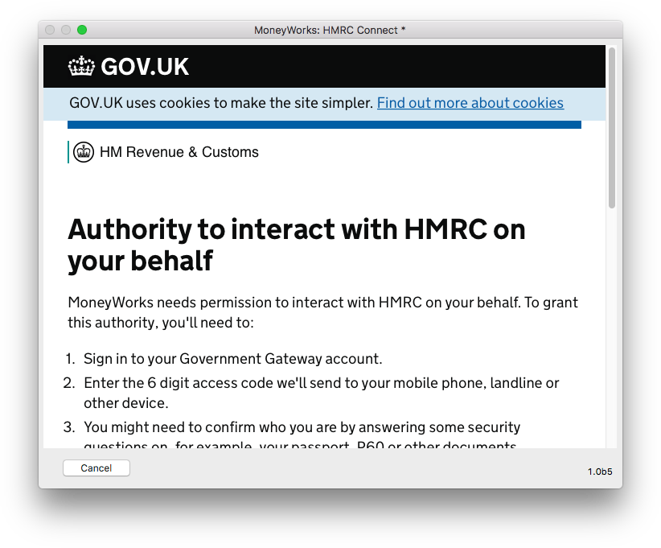
Using MTD in MoneyWorksTo start the MTD process, choose Command>MTD Connect... to open the HMRC Connect window. This may take a few seconds, as MoneyWorks will check the HMRC system and display your VAT Obligations when the window opens.
Note: The MTD Connect... command is only available to users who have the
VAT Report/Finalisation User Privilege turned on.
Note: You can also connect to HMRC by clicking the Connect button in the Preview of the VAT Guide:
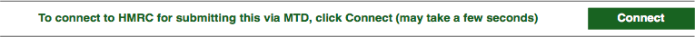
If this is the first time you have used the MTD Connect command, you will prompted to enter some required settings:
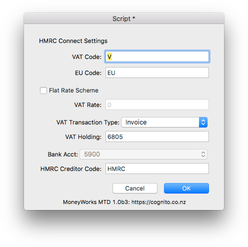
The following information is required:
VAT Code: This is the first character of your VAT codes, normally "V". The report picks up all transactions with a tax code starting with this code (so you can have, for example, a code VR for reduced VAT).
EU Code: This is the code (normally "EU") you use for VAT on purchases from other EU countries. All transactions with codes starting with this will be included in the EU VAT calculations.
Flat Rate Scheme: Turn this on only if you are on the Flat Rate Scheme and enter your VAT rate into the VAT Rate field.
VAT Transaction Type: The type of MoneyWorks transaction to make to represent the return to HMRC. You can choose None for no transaction, Payment for a Payment transaction, and Invoice for a purchase invoice (which you will pay later).
VAT Holding: This is your VAT Holding account. It should be the same as that used in the VAT Finalisation section of the VAT Report. You need to specify this if you choose Payment or Invoice for the VAT Transaction Type.
Bank Acct: If you make a Payment transaction, specify the bank account from which you are going to make the VAT payment.
HMRC Code: The creditor code for HMRC if you elect to make a Purchase Invoice. You will need to set up HMRC as a creditor in MoneyWorks. When you submit a return using MTD, a creditor invoice will be created which you can mark off as being paid once you have actually paid your VAT (or received a refund).
If you need to alter your settings subsequently, click the Settings button in the
HMRC Connect window.
Certain capital expenditure transactions need to be reported in this scheme. To include such transactions (for example the Capital expenditure above £2000) put the code "FRI" (Flate Rate Include) in the category2 field of the Account record. These transactions are reported only, not included in calculation of flat rate VAT payable. To exclude capital expenditure transactions from the report, use an account code with "FRE" (Flat Rate Exclude) in the account's category2 field. Capital expenditures of less than £2000 for example do not need to be reported.
Example: If you buy a vehicle for £1500 then this should be coded to a GL account which has the code "FRE" in category2 field, so as to exclude it from the report. Alternatively, if the vehicle was bought for say £2500, then it should be coded to a GL account with the code "FRI" in category2, as this is above the limit.
Hence the implementation of flat VAT may require you to have two different account codes (for the same type of item, such as Vehicle) with the codes "FRE" and "FRI" in their category2 fields.
Information about your latest VAT information, as well as information accessed from the HMRC site, is displayed in this window:
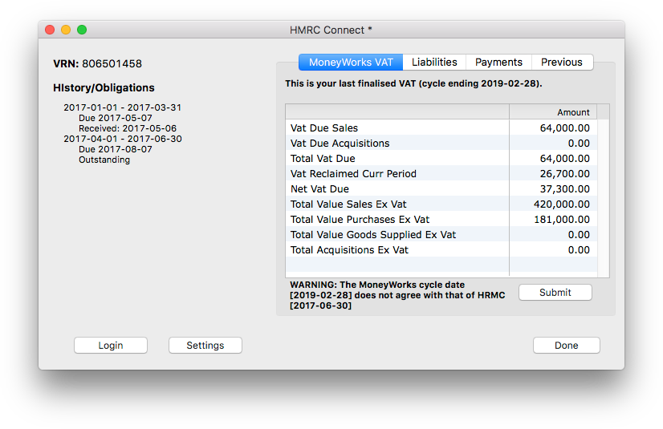
VRN Number: This is the VAT number as specified in Show>Company Details in MoneyWorks.
History/Obligations: This information is retrieved from the HMRC site and shows your history and obligations over the last twelve months.
MoneyWorks VAT: These are the numbers from your last Finalised VAT return in MoneyWorks. It is these numbers that will be uploaded to HMRC if you click the Submit button.
Liabilities: Click on this tab to display your current VAT liabilities as recorded by HMRC. Note that there will be a delay of a few seconds while MoneyWorks retrieves the data from HMRC.
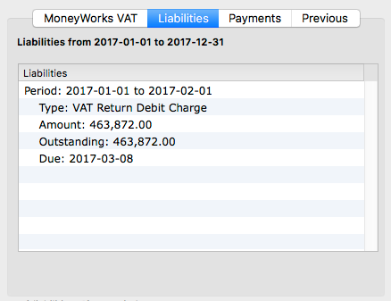
Payments: Click on this tab to see your payments as recorded by HMRC. Note that there will be a delay of a few seconds while MoneyWorks retrieves the data from HMRC.
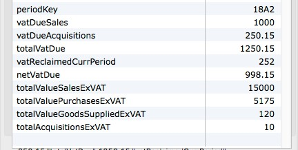
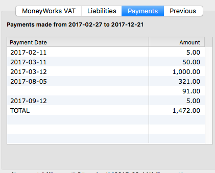
Previous: Click on this tab to view a previous VAT return. Select the VAT period from the Period pop-up menu and click the View Old button.
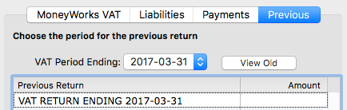
Note that there will be a delay of a few seconds while MoneyWorks retrieves the data from HMRC. The information from the selected submission (if any) will be displayed in the list.
Login: Click this button only if you need to force a re-login to the HMRC system again. MoneyWorks will automatically log you in whenever you choose Command>HMRC Connect, but there may be circumstances when you want to force a new login.
Note: MoneyWorks will preserve the login information (a token supplied by HMRC when you first successfully login) across sessions. Clicking this Login button will clear this token, and you will need to re-enter your HMRC Credentials.
To submit your VAT:
This is the information that will be sent HMRC and is based on your last finalised VAT return.
You will be asked for confirmation:
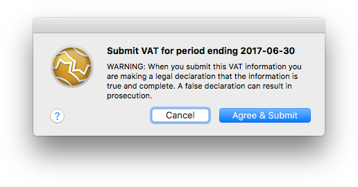
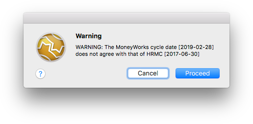
Note that MoneyWorks checks that its cycle end date is the same as that expected by HMRC. If it isn't the following alert will display. You will need to decide what to do (if you submit, it will use the period from HMRC, not that from MoneyWorks). As an example, you will get this alert if you have forgotten to Finalise your VAT report since you last submitted.
If the submission is accepted, an alert will be displayed showing the HMRC response code (ID) and the reference number (sequencenumber) of the associated transaction created in MoneyWorks if any (you can view this transaction in Entered Today).
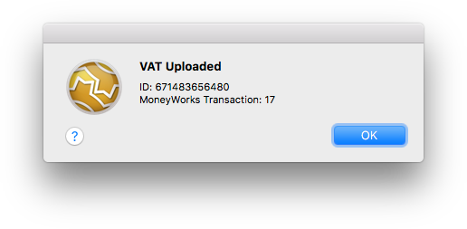
If you get an alert saying "Possible Submission Error", as shown below, this does not necessarily mean that the submission has failed, but that the HMRC system failed to return a proper ID.
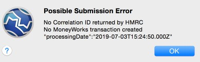
In principle this should never happen, but in practice it does. You should login to the HMRC website and check that the submission is there (in all recorded instances of this message, the submission has been successful). MoneyWorks will not make a transaction for this return in this instance, so if you want a transaction you will need to manually enter it.
Note that, when an ID is returned, it is stamped on the transaction should you need it:
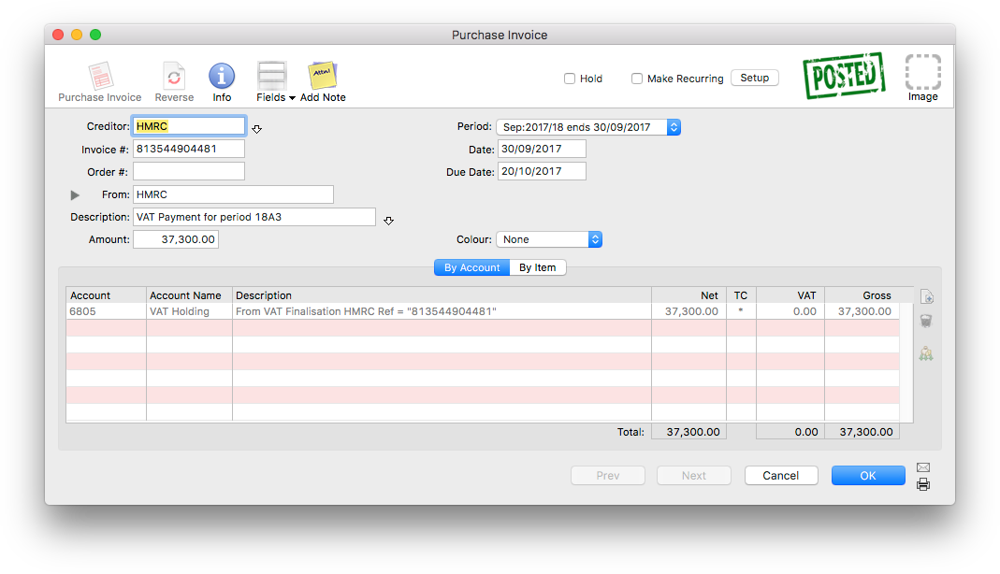
The successful submission is also recorded in the MoneyWorks Log file (Show>Log File).
The submission might be rejected. In this case an alert will be displayed showing the reason that HMRC gave for the rejection.
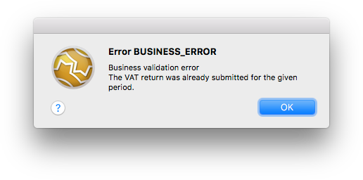
Fixing the VAT informationIf the VAT information displayed is incorrect, you will need to fix it before submitting the return. You need to locate the incorrect transactions and cancel and re-enter them, or enter any transactions that are missing. In principle you should have done this before finalising your VAT Report, however we all make mistakes!
Because your VAT Report has been finalised, you will need to do a bit of additional work to get these corrections included in your VAT Submission. Basically, having entered and checked and posted the corrections:
This is done in Edit>Document Preferences>VAT, where you reset the value of the Next cycle ends on date.
This picks up all posted transactions that have not been previously processed for VAT and which are dated on or before the cycle end date. In other words it should contain just your corrections.
Now re-run the VAT Report, and this time click the Load Old option, highlight the two (or more, if you have been really having a bad day) most recent reports and click Use.
To amalgamate these individual reports into a single return, turn on the Use Reprint Figures for Guide Form option, then print or preview the report.
This will be a combined report that amalgamates the data in the highlighted reports.
For more information on combining VAT Reports see Reprinting a VAT Report
The IRD Connect facility in MoneyWorks, introduced in version 8.1.6, allows New Zealand users to file their GST returns directly to the IRD, obviating the need to reenter the numbers into the IRD website.
Note that you will need a myIRD account to be able to use this.
Important: The facility enables you to submit your GST Return directly to IRD, but does not enable payment. If you are using a direct debit to pay your GST, you will will still need to log into myIRD to authorise payment.
To start the IRD Connect process, choose Command>IRD Connect... to open the
IRD Login window:
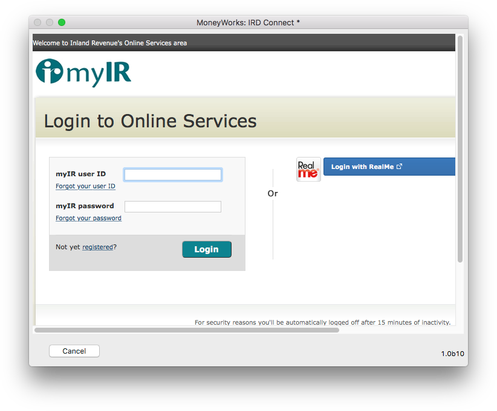
Note: The IRD Connect... command is only available to users who have the GST Report/Finalisation User Privilege turned on.
Note: You can also connect to the IRD by clicking the Connect button in the Preview of the GST Guide:
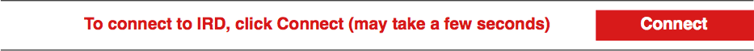
Note: A connection to the IRD will expire after about fifteen minutes of no activity, and you will need to re-login.
Note: You must have your IRD number set in the IRD# field in Show>Company details. This is a nine digit number (normally the same as your GST number, but with a leading zero if required).
If this is the first time you have used the IRD Connect command, you will be prompted to enter some required settings – these determine what type of MoneyWorks transaction, if any, will be created when you Submit your GST:
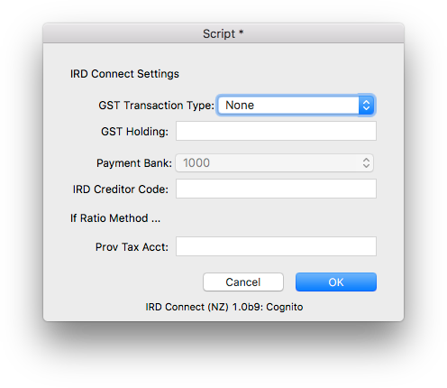
The following information is required:
GST Transaction Type: The type of transaction to create when you submit using IRD Connect. If this is set to "None", no transaction will be created (and no other fields need to be entered in the Settings). If set to "Payment", a payment transaction will be created against the nominated bank account. If set to "Invoice", a supplier invoice will be created for the nominated IRD creditor code.
GST Holding: This is your GST Holding account. It should be the same as that used in the GST Finalisation section of the GST Report.
Payment Bank: The bank account against which the payment is to be made.
IRD Creditor Code: The creditor code for IRD. You will need to set up IRD as a creditor in MoneyWorks if you want to create an invoice. When you submit a return using IRD Connect, a creditor invoice will be created which you can mark off as being paid once you have actually paid your GST (or received a refund).
Prov Tax Acct: If you are on the Ratio Method, this is the account for the provisional tax portion of your payment. If you leave it blank the GST Holding will be used.
If you need to alter your settings subsequently, click the Settings button in the
IRD Connect window.
Information about your last finalised GST, as well as information accessed from the IRD site, is displayed in this window:
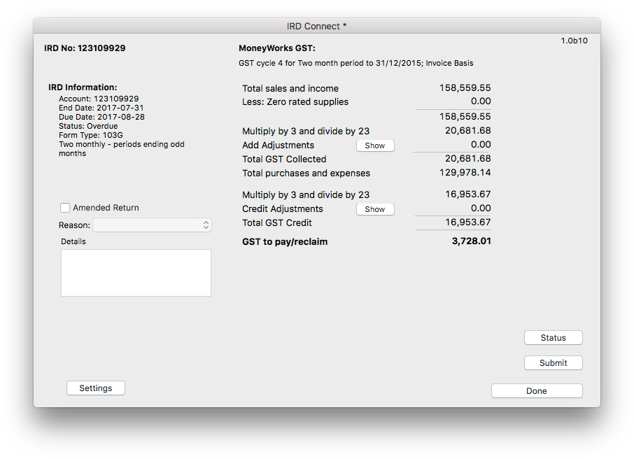
IRD Number: This is the IRD number, as specified in Show>Company Details in MoneyWorks.
IRD Information: This information is retrieved from the IRD site and shows your current obligations and status.
MoneyWorks GST: These are the numbers from your last Finalised GST return in MoneyWorks. It is these numbers that will be uploaded to the IRD if you click the Submit button.
If you are registered for the Ratio method, additional information is shown:
This is the information that will be sent to the IRD and is based on your last finalised GST return.
Entering adjustments is described below.
You will be asked for confirmation:
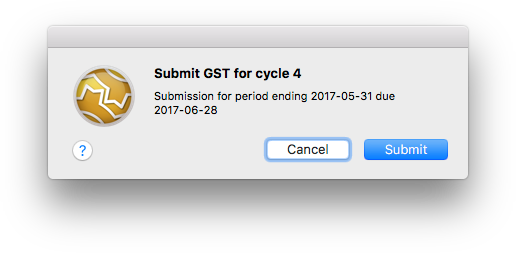
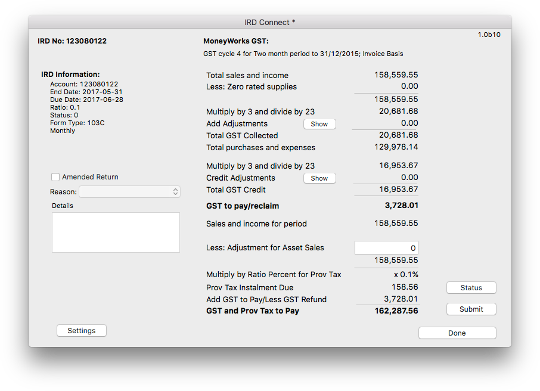
Note that MoneyWorks checks that its cycle end date is the same as that expected by IRD. If it isn't, the following alert will display, and you will need to decide what to do (if you submit, it will use the period from the IRD, not that from MoneyWorks). As an example, you will get this alert if you have forgotten to Finalise your GST report since you last submitted.
To submit your GST:
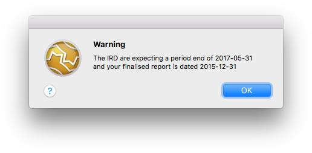
If the submission is accepted, an alert will be displayed showing the IRD response code (you don't need to record this as it will be noted in Show>Log).
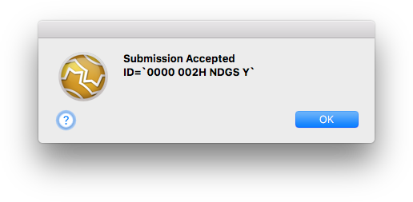
Note: The Submit button will be disabled once you have submitted a return.
If, in the settings, you have elected to make a transaction, this is also created. The example below is from a submission for a company on a ratio basis:
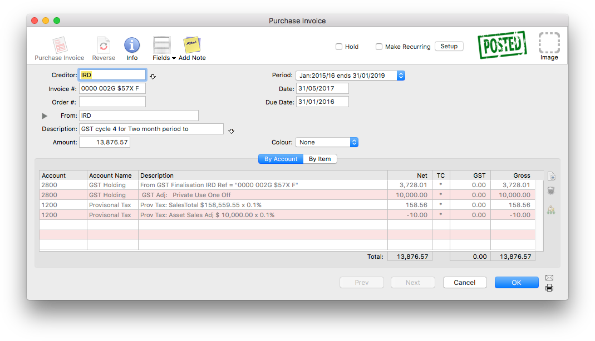
The submission might be rejected. In this case an alert will be displayed showing the reason that IRD gave for the rejection.
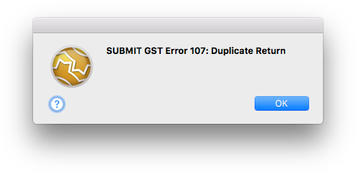
Clicking the Status button will retrieve the updated status. This will have changed to "Submitted" if your submission was successful.
If you need to include GST adjustments:
The Adjustments window will be displayed:
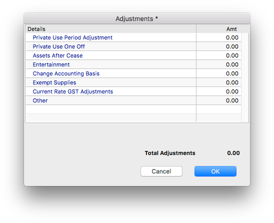
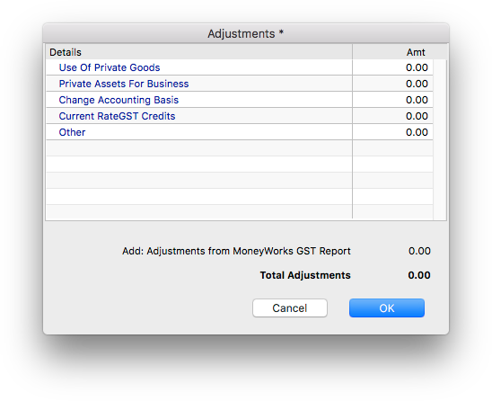
Debit Adjustments Credit Adjustments
Click OK
The adjustments will be included in the numbers submitted to the IRD, and, if you have elected to generate an accounting transaction in MoneyWorks, it will be accounted for in this (coded against the nominated GST Holding account).
Important: You may have entered adjustment information when you previewed the GST Guide. This information is not carried through to the IRD Connect window and must be re-entered.
If the GST information displayed is incorrect, you will need to fix it before submitting the return. You need to locate the incorrect transactions and cancel and re-enter them, or enter any transactions that are missing. In principle you should have done this before finalising your GST Report, however we all make
mistakes!
Because your GST Report has been finalised, you will need to do a bit of additional work to get these corrections included in your GST Submission. Basically, having entered and checked and posted the corrections:
This is done in Edit>Document Preferences>GST, where you reset the value of the Next cycle ends on date.
This picks up all posted transactions that have not been previously processed for GST and which are dated on or before the cycle end date. In other words it should contain just your corrections.
Now re-run the GST Report, and this time click the Load Old option, highlight the two (or more, if you have been really having a bad day) most recent reports and click Use.
To amalgamate these individual reports into a single return, turn on the Use Reprint Figures for Guide Form option, then print or preview the report.
This will be a combined report that amalgamates the data in the highlighted reports.
For more information on combining GST Reports see Reprinting a GST Report
If you have already submitted a GST return and realise that you need to amend it:
Choose Command>IRAS Connect ...
You will be prompted for the form to file.
Choose F5 for the normal filing, F7 if this is an amendment, F8 if you are no longer subject to GST and this is your final return.
The Iras Connect window will open
This contains a summary of your GST based on your last finalised GST Report:
Choose Command>IRD Connect to re-login to the IRD
Note that you will get a warning, as the current GST cycle in MoneyWorks will have a different end date that that of the IRD.
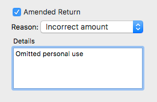
Click Submit
The changed data and amendment reason will be submitted to the IRD.
Note: If, in the Settings, you have elected to create a transaction, a new transaction is created at this point. If you created an invoice, the previously created invoice will be automatically cancelled (provided it has not been paid); if you created a payment, you will need to manually cancel the original.
Singapore On-Line Filing
As of version 9.0.8, MoneyWorks users in Singapore can file their GST on-line (forms F5, F7 and F8) direct to IRAS.
To submit the last finalised GST return:
You should check the numbers carefully.
Note: The values of boxes marked with an * can be amended by double- clicking.
Note: For F7 submissions the results from the last F5 submission are displayed, or, if the Use last finalised GST information checkbox is on, the results of the last finalised report. Use the latter option if you have corrected the transactions in MoneyWorks and prepared a combined GST report that incorporated the changes. In either case, you can alter any of the numbers in the report prior to submission.
4. If applicable, check any of the options down the right hand side and enter the amount into the field that will be displayed
Note that zero is not a valid value for these fields.
Additional information may be requested if certain conditions are detected.
For example, if Box 1 is greater than zero and Box 6 is less than zero, the following will be displayed:
In these situations if you select Other you must provide a reason.
When the form is correctly filled out, click the Submit button
If no inconsistencies are detected, the Declaration window will be displayed:
7. Complete the declaration and click Submit
The IRAS login window will open:
Use your Singpass or User/Password to connect to IRAS and follow the instructions given.
Note: Depending on load, the login and submission process can take a long time. Be patient.
In the final submission screen, clicking the Allow button will submit the data:
When the data has been accepted by IRAS an alert will be displayed:
At this point the process is complete and you can close the IRAS Connect window.
If an error is detected by IRAS during the submission process this will be displayed, for example:
The nature of VMS imposes a number of restrictions on how you can use MoneyWorks. For example, final invoices or receipts must be fiscalised before issuing, and certain information must be displayed on the printed form. It follows that a sales transaction must be fiscalised just before posting (so it cannot be subsequently altered), which means that there are now restrictions on posting these transactions. Additionally special invoice layouts are required to be used when printing a sales invoice or docket.
You will need to correct this and resubmit.
VMS Configuration